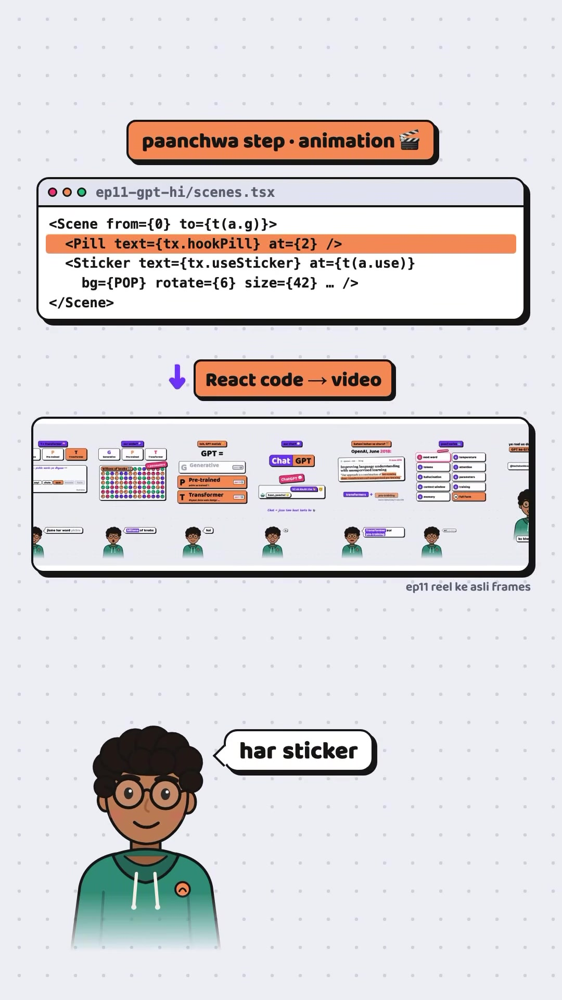
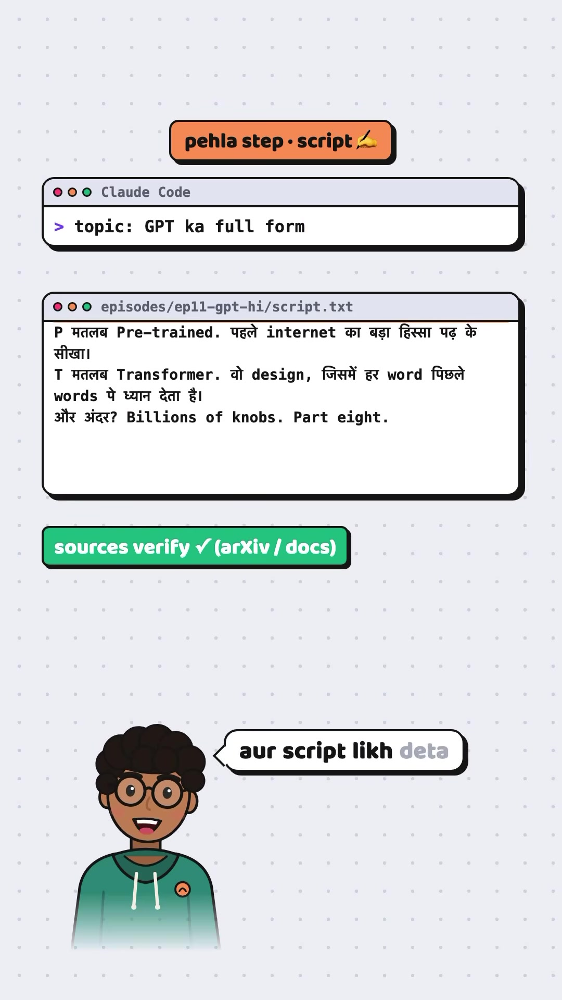
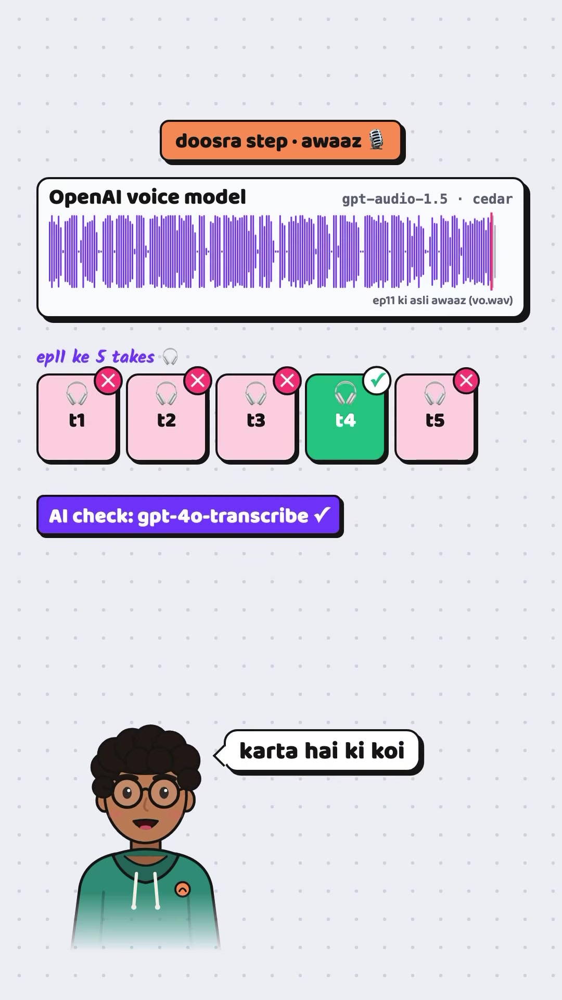
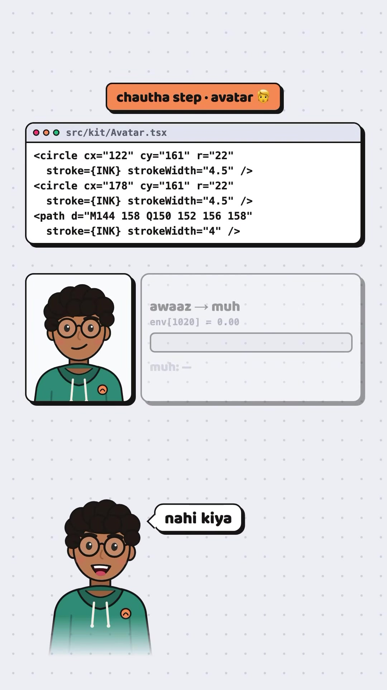
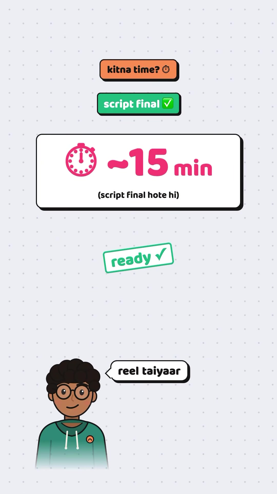

Video-Creation · AI-Explainers
Autonomous Faceless AI Reel Engine: Claude Code Agents, OpenAI Cedar Voice, Whisper Word Timings & Remotion
A full-stack programmatic video generation architecture developed by Tech Bro (@techstackbro) producing publication-ready, faceless vertical reels in approximately 15 minutes. Decomposes the production pipeline into five automated engineering stages orchestrated by Claude Code autonomous agents: deep topic research and script validation against primary sources (arXiv/documentation), neural text-to-speech synthesis via OpenAI's Cedar voice model with multi-take self-verification (gpt-4o-transcribe), word-level caption alignment using OpenAI Whisper, reactive SVG/TSX mouth-viseme avatar animations driven by audio amplitude envelopes, and programmatic rendering into MP4 via Remotion (React-to-video).

scenes.tsx) where every layout card, sticker, and transition is defined as deterministic React code.The 5-Step Agentic Video Pipeline
-
Step 1 · Script Research & Source Verification (Claude Code):
Claude Code receives a topic prompt (e.g.
topic: GPT ka full form). It performs automated research, cross-verifies technical definitions against primary sources (academic papers on arXiv and official documentation), and writes the conversational script file (episodes/ep11-gpt-hi/script.txt). The human creator only reviews and gives a single approval (okay). -
Step 2 · Neural Voiceover & Automated Multi-Take Verification:
Audio is synthesized using OpenAI's voice model (
gpt-audio-1.5,cedarvoice preset) outputtingvo.wav. Rather than relying on a single inference pass, the agent generates 3 to 5 candidate takes (t1–t5) and invokes an automated quality check (gpt-4o-transcribe) to detect mispronunciations, stuttering, or hallucinated phonemes, discarding flawed takes and selecting the cleanest take (e.g.t4). -
Step 3 · High-Precision Word Timings (OpenAI Whisper):
The selected
vo.wavaudio file is passed through Whisper to extract microsecond word-level timestamps. This enables animated speech bubble captions that track speech velocity synchronously. -
Step 4 · Code-Driven Audio-Reactive Avatar (
Avatar.tsx): The character avatar is not manually illustrated frame-by-frame; it is an SVG component written in TypeScript (src/kit/Avatar.tsx). The mouth opening path (viseme) dynamically recalculates its curve geometry based on audio amplitude envelopes:- Calculates volume envelope:
env[frame] = amplitude. - When volume is zero:
muh: band(mouth closed). - As vocal volume increases, the mouth path height expands proportionally to audio intensity.
- Calculates volume envelope:
-
Step 5 · Programmatic Composition & Rendering (Remotion):
Remotion converts React DOM structures into video frames (
ep11-gpt-hi/scenes.tsx). Timed visual cues (<Pill>,<Sticker>, comparison tables, code boxes) bind to timestamp offsetsat={t(a.use)}. - Parallel Agent Orchestration: Claude Code provisions specialized background sub-agents simultaneously across research, audio validation, and component generation, reducing end-to-end turnaround to ∼9 minutes of machine computation (and ∼15 minutes total from script approval to final MP4).
Architecture Screens & Code Artifacts

script.txt with verified arXiv/docs sources.

env[frame] amplitude in Avatar.tsx.
Verbatim Breakdown
| Time / Step | Spoken Audio (Hinglish) | On-Screen Code / Display Elements |
|---|---|---|
| 00:00 - 00:05 | "Is channel ki har reel AI banata hai. Main sirf faisla karta hoon. Chalo dikhata hoon." | is channel ki har reel AI banata hai main sirf faisla karta hoon |
| 00:06 - 00:17 | "Pehla step: Script. Claude Code ko topic milta hai, woh research karta hai, sources verify karta hai aur script likh deta hai. Main bas okay karta hoon." | pehla step • script ✍️ Terminal: Claude Code > topic: GPT ka full formFile: episodes/ep11-gpt-hi/script.txtBadge: sources verify ✓ (arXiv / docs) • okay ✓ • main bas okay karta |
| 00:18 - 00:29 | "Doosra step: Awaaz. Jo awaaz tum sun rahe ho, woh OpenAI ka voice model hai. Har reel ke teen se paanch takes bante hain, aur AI khud sunke check karta hai ki koi word gadbad toh nahi." | doosra step • awaaz 🎙️OpenAI voice model: gpt-audio-1.5 • cedarAudio waveform: ep11 ki asli awaaz (vo.wav)Takes: [t1 ✗] [t2 ✗] [t3 ✗] [t4 ✓] [t5 ✗]Check: AI check: gpt-4o-transcribe ✓ • word gadbad toh nahi |
| 00:30 - 00:36 | "Teesra step: Captions. Whisper har ek word ki timing pakadta hai, isiliye bubble mein words awaaz ke saath-saath chalte hain." | teesra step • captions 💬 OpenAI Whisper word-level timing • animated caption bubbles |
| 00:37 - 00:46 | "Chautha step: Yeh avatar. Ise kisi ne draw nahi kiya, yeh code hai. Awaaz jitni tez, mera munh utna khulta hai." | chautha step • avatar 👱src/kit/Avatar.tsx<circle cx="122" cy="161" r="22" stroke={INK} strokeWidth="4.5" /><circle cx="178" cy="161" r="22" stroke={INK} strokeWidth="4.5" /><path d="M144 158 Q150 152 156 158" stroke={INK} strokeWidth="4" />awaaz → muh • env[974] = 0.00 • muh: - • draw ✗ code ✓ |
| 00:47 - 00:54 | "Paanchwa step: Animation. Remotion naam ka tool React code ko video mein badalta hai. Har card, har sticker, sab code." | paanchwa step • animation 🎬ep11-gpt-hi/scenes.tsx<Scene from={0} to={t(a.g)}><Pill text={tx.hookPill} at={2} /><Sticker text={tx.useSticker} at={t(a.use)} bg={POP} rotate={6} size={42} ... /></Scene>React code → video • Remotion |
| 00:55 - 01:01 | "Aur best part: Claude Code har reel pe alag-alag AI agents lagata hai, jo ek saath kaam karte hain. Script final hote hi, takreeban 15 minute mein reel taiyaar." | kitna time? ⏱️ • script final ✓ • ~9 min (script final hote hi) • takreeban 15 minute mein |
| 01:02 - 01:06 | "Yeh poora system chahiye? Comment karo BANAO. Har step ka breakdown aage ki reels mein." | CTA: Comment "BANAO" for full system setup. |
Referenced Technologies & Architecture Stack
- Claude Code (Anthropic): Command-line agent executing multi-step autonomous workflows, topic research, and source verification.
- OpenAI Voice API (
gpt-audio-1.5): High-fidelity neural voice synthesis using thecedarvoice preset. - Automated QC (
gpt-4o-transcribe): Multi-take validator comparing transcribed speech back against source script to flag phoneme deviations. - OpenAI Whisper: Speech-to-text timing model extracting microsecond timestamps per word for synchronized animated captions.
- Remotion (React Video): Open-source framework rendering React components, SVG illustrations, and keyframe transitions into native MP4 video.
Try This (Recreating the Pipeline)
- Initialize a Remotion project:
npx create-video@latest. - Create an SVG avatar component (
Avatar.tsx) with parametric path coordinates for eye circles and mouth curves. - Use the
@remotion/media-utilspackage withuseAudioDatato extract the volume waveform envelope (env[frame]) from an input audio track. - Map the normalized amplitude (0.0 to 1.0) to the mouth SVG quadratic bezier curve height (
Q150 ${152 + env * 14} 156 158) to achieve instant lip sync without manual keyframing. - Script an automated Claude Code agent workflow that calls the OpenAI Voice API, validates transcription accuracy with Whisper, and executes
npx remotion renderto output the finished reel.